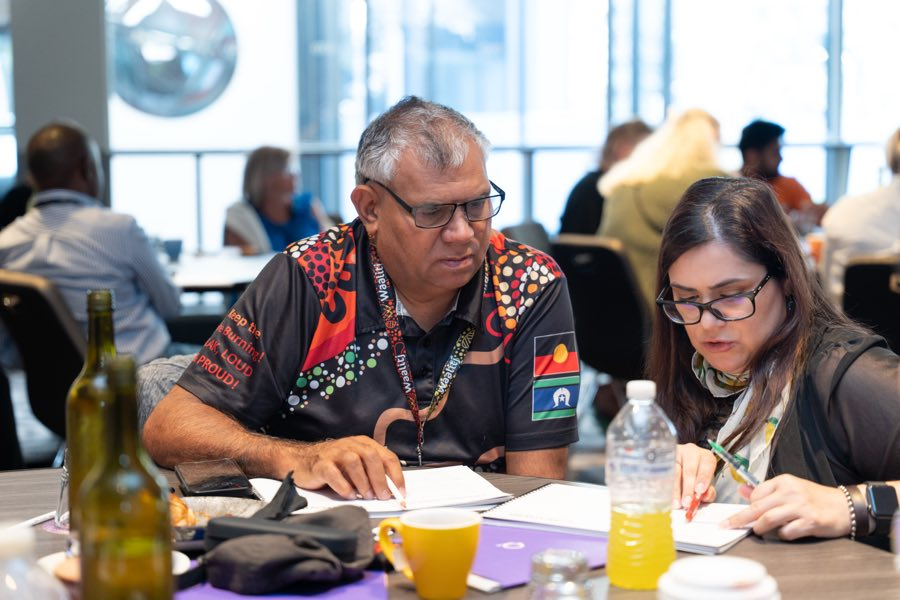
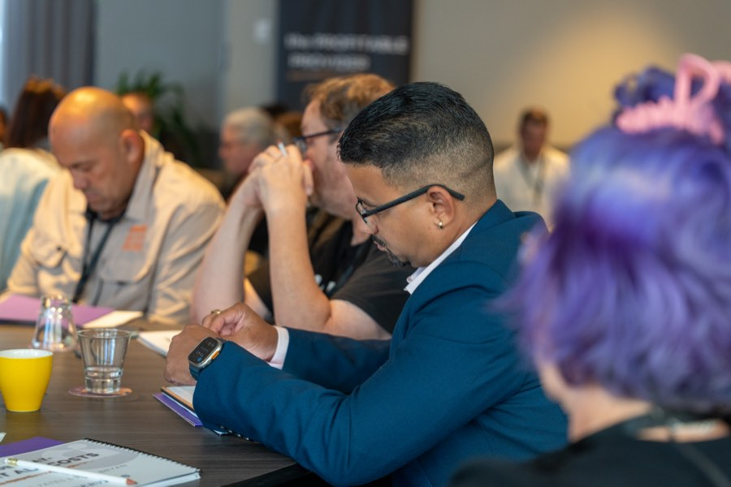

Email Marketing
Stay in front of the people who were not ready the first time.
Not every enquiry converts on the first call
Plans get delayed, families need time, coordinators are comparing options. The providers who win these enquiries are the ones who stay in touch without being pushy.
Email is how you do that. Simple, straight-talking sequences that keep your name in front of families and coordinators until the timing is right. We write and build email campaigns specifically for NDIS providers, covering new enquiry follow-up, referrer relationships, and re-engagement.
What we actually build
The follow-up that turns "not yet" into "yes"
A family enquires. You call back. They are not ready to decide. What happens next?
For too many providers, the answer is nothing. The enquiry sits in a spreadsheet, and nobody follows up until it is too late.
We build automated follow-up sequences that keep the conversation going without your team having to remember who they called last Tuesday. Three to five emails over a few weeks, written in a warm, conversational tone, providing useful information and making it easy to get back in touch when they are ready.

Keep coordinators thinking of you
Support coordinators refer to providers they know, trust, and remember. A regular email that lands in their inbox, sharing a quick update, a vacancy, or something useful about the sector, keeps your name current without your team having to call every coordinator individually every month.
We write referrer nurture sequences specifically for support coordinators and allied health professionals. The tone is different to family-facing emails: professional, concise, business to business. A coordinator does not want a newsletter about your company values. They want to know you have a vacancy in their area, or that you have expanded into a new service.

A regular email that people actually read
A provider newsletter should not read like a corporate update. Families and coordinators delete those before the first paragraph. A good newsletter is short, useful, and written like a person wrote it.
We help you build a monthly or fortnightly newsletter that shares real stories from your team, practical information for families, and updates that matter. Plain language, no jargon, no stock photos. Written to build trust over time, not to win a design award.
The leads you already have are worth something
If you have been operating for more than a year, you probably have a list of past enquiries, old leads, and contacts who went quiet. Those people already know your name. A well-written re-engagement sequence can bring some of them back without any ad spend.
We review your existing contacts, segment them by how they originally came in, and write a short re-engagement sequence designed to restart the conversation. Not every contact will respond. But the ones who do are warmer than any new lead from an ad.
Email works after you have an audience. It does not build one.
Email only works if someone is on the list. If your website gets ten visitors a month and you have a mailing list of thirty people, email is not your first priority.
Build visibility first
Start with SEO or ads, grow the list, and then use email to nurture the people who come through.
Where email makes the biggest difference
Providers who are generating enquiries but not converting enough of them, and providers with an existing contact base they have not communicated with in months. If either sounds familiar, this is where to start.
What providers ask about email marketing
What email platform should I use?
For NDIS providers, simple is better. Mailchimp, MailerLite, or similar. The platform matters less than the content and consistency. If you already have a platform you are paying for, we will work with it. If you are starting from scratch, we will recommend one based on your list size and needs.
How often should I send emails?
For family-facing newsletters, fortnightly or monthly. For referrer nurture, monthly or when you have something genuinely useful to share, such as a new vacancy or a new service area. Follow-up sequences are automated and run on a schedule after someone enquires. The principle: email often enough to stay in mind, not so often that people unsubscribe.
Will you write the emails for me?
Yes. Every subject line, every email, every sequence. Written in plain language for NDIS families and coordinators. We send drafts for your review before anything goes out.
I have a mailing list but I have not emailed them in a year. Is it too late?
No, but you need to re-introduce yourself. We write a re-engagement sequence specifically for dormant lists. Some people will unsubscribe, and that is fine. The ones who stay are the ones worth talking to.
Find out what email could do for your existing contacts
The audit is free.